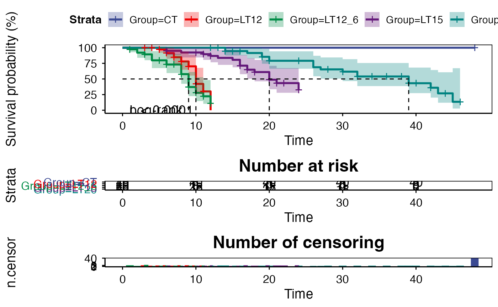
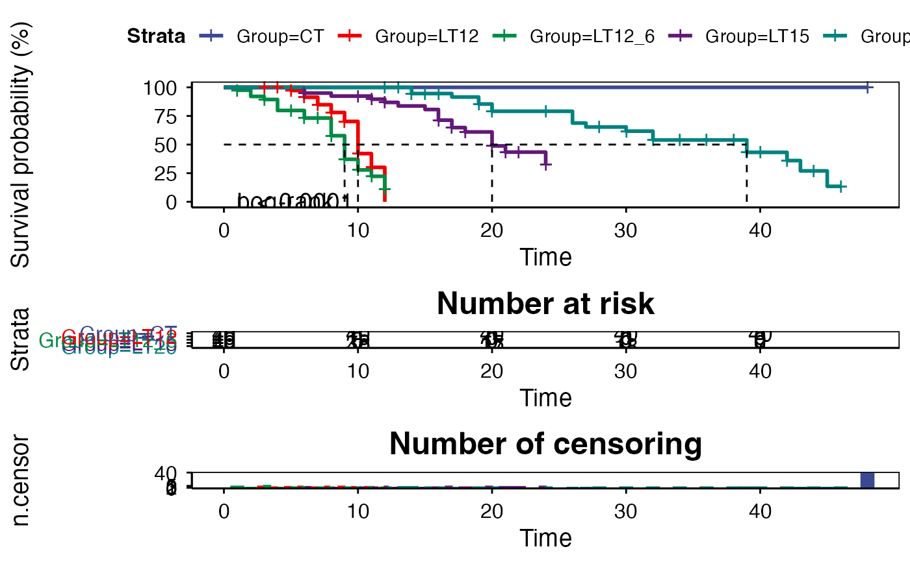
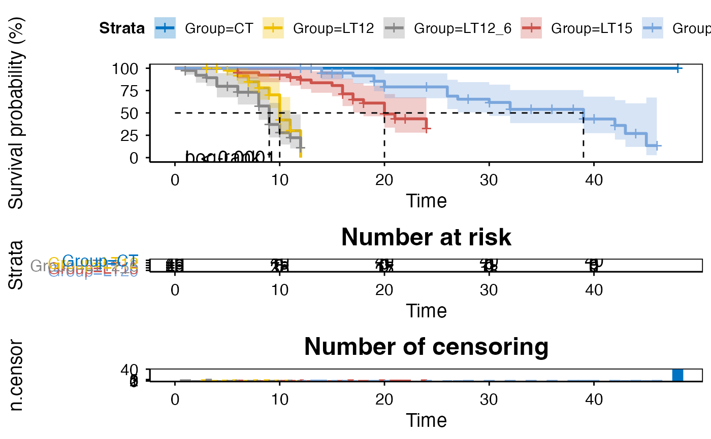

Survival plot for analyzing and visualizing survival data.
Source:R/survival_plot.R
survival_plot.RdSurvival plot for analyzing and visualizing survival data.
Usage
survival_plot(
data,
curve_function = "pct",
log_rank = "1",
conf_inter = TRUE,
interval_style = "ribbon",
risk_table = TRUE,
num_censor = TRUE,
sci_palette = "aaas",
ggTheme = "theme_publication",
x_start = 0,
y_start = 0,
y_end = 100,
x_break = 10
)Arguments
- data
Dataframe: survival record data (1st-col: Time, 2nd-col: Status, 3rd-col: Group).
- curve_function
Character: an arbitrary function defining a transformation of the survival curve. Often used transformations can be specified with a character argument: "event" plots cumulative events (f(y) = 1-y), "cumhaz" plots the cumulative hazard function (f(y) = -log(y)), and "pct" for survival probability in percentage.
- log_rank
Character: the weights to be used in computing the p-value for log-rank test. Default: "1", options: "1", "n", "sqrtN", "S1", "S2", "FH". so that weight correspond to the test as : 1 - log-rank, n - Gehan-Breslow (generalized Wilcoxon), sqrtN - Tarone-Ware, S1 - Peto-Peto's modified survival estimate, S2 - modified Peto-Peto (by Andersen), FH - Fleming-Harrington(p=1, q=1).
- conf_inter
Logical: confidence interval. Default: TRUE, options: TRUE, FALSE.
- interval_style
Character: confidence interval style. Default: "ribbon", options: "ribbon", "step".
- risk_table
Logical: show cumulative risk table. Default: TRUE, options: TRUE, FALSE.
- num_censor
Logical: show cumulative number of censoring. Default: TRUE, options: TRUE, FALSE.
- sci_palette
Character: ggsci color palette. Default: "aaas", options: "aaas", "npg", "lancet", "jco", "ucscgb", "uchicago", "simpsons", "rickandmorty".
- ggTheme
Character: ggplot2 themes. Default: "theme_publication", options: "theme_default", "theme_bw", "theme_gray", "theme_light", "theme_linedraw", "theme_dark", "theme_minimal", "theme_classic", "theme_void"
- x_start
Numeric: x-axis start value. Default: 0, min: 0, max: null.
- y_start
Numeric: y-axis start value. Default: 0, min: 0, max: 100.
- y_end
Numeric: y-axis end value. Default: 100, min: 0, max: 100.
- x_break
Numeric: x-axis break value. Default: 10, min: 0, max: null.
Examples
# 1. Library TOmicsVis package
library(TOmicsVis)
# 2. Use example dataset
data(survival_data)
head(survival_data)
#> Time Status Group
#> 1 48 0 CT
#> 2 48 0 CT
#> 3 48 0 CT
#> 4 48 0 CT
#> 5 48 0 CT
#> 6 48 0 CT
# 3. Default parameters
survival_plot(survival_data)
#> Ignoring unknown labels:
#> • colour : "Strata"

# 4. Set conf_inter = FALSE
survival_plot(survival_data, conf_inter = FALSE)
#> Ignoring unknown labels:
#> • colour : "Strata"

# 5. Set sci_palette = "jco"
survival_plot(survival_data, sci_palette = "jco")
#> Ignoring unknown labels:
#> • colour : "Strata"
